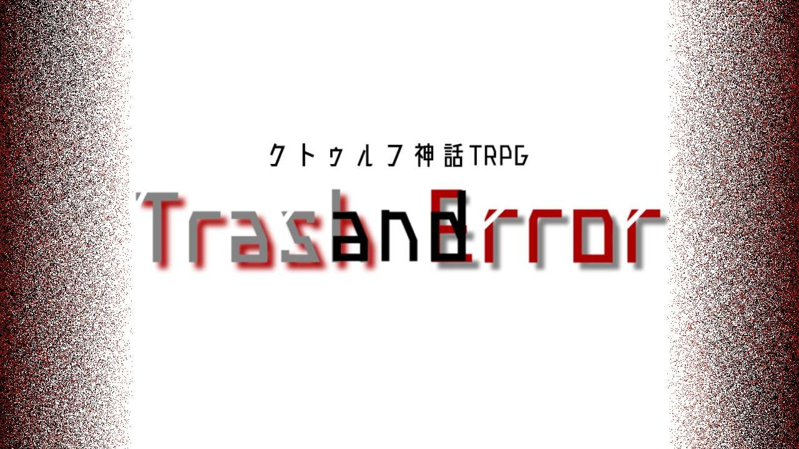

作品紹介
鬼詠が制作した初のタイマンシナリオ。
かなり特殊なギミックや、オリジナルの呪文を多く含みますので、プレイする際には注意してください。
TRPGの面白さと、オリジナルギミックの塩梅、そして重みのあるストーリーを合わせ持ったシナリオとなっています。
ロールプレイに力が入る方にこそオススメしたい一作です。
ぜひプレイしてみてください。
※本作はクトゥルフ神話TRPG第6版向けの作品です。シナリオのあらすじやプレイ情報など、詳細は配布ページをご確認ください。
作品情報
- システム：クトゥルフ神話TRPG 第6版
- 配布・頒布先：BOOTH
- 人数:1人 タイマン
- 形式:クローズド
- 背景:現代日本
- 推奨技能:図書館、心理学
- 準推奨技能:目星、聞き耳、回避
- 推奨探索者:心優しい探索者、ステータス高めの探索者(特にINT、EDU)
- ※シナリオ内では男性探索者を想定
- ロスト率:高
配布ページ
作品の詳細、価格、ダウンロード内容、利用条件などは、以下のBOOTHページでご確認ください。
BOOTHで作品を見る ↗#トラエラ